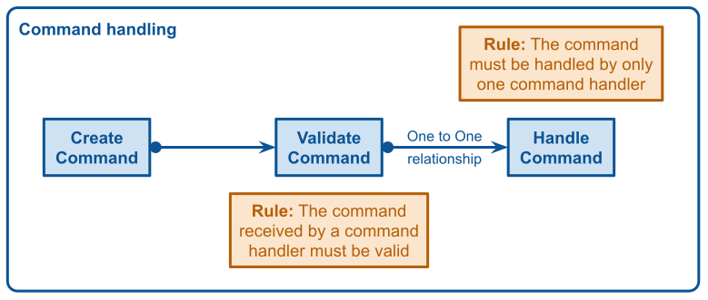

A command is an object used to encapsulate all information needed to achieve an action. We will use this design pattern to represent user intents and we will give it to a command handler. A command handler is just a callable that will perform every action to complete one user intent. As you may understand this design pattern is perfect to manage your business use cases.
A command is often designed as a Data Transfer Object (an object without any behavior). The most important rule to know about its design is that a command should be easily serializable. This way it can be sent to a queue (RabbitMQ or pub-sub for instance) to be handled in an asynchronous way.
As you will see in the next schema, there is a one-to-one relationship between a command and a command handler because there is only a single way to handle a use case. Moreover, the command handler should receive a valid command because it gives feedback to users before handling the use case if the data given by the user is wrong. The only responsibility of a command handler is to handle use cases.

Let’s take a simple example: an account creation. Our business expert only expects that users need to provide an email and a password to create an account to be able to log in. We will create a command CreateAnAccount and its handler CreateAnAccountHandler.
First, we need to create a command named CreateAnAccount which will represent the user intent.
final class CreateAnAccount
{
private string $username;
private string $password;
public function __construct($username, $password)
{
$this->username = $username;
$this->password = $password;
}
public function username(): string
{
return $this->username;
}
public function password(): string
{
return $this->password;
}
}
Tip: To ease the command creation you can use libraries like the Symfony Serializer component. It makes object creation from a set of data (JSON for example) easier and faster.
$createAccount = $serializer->deserialize(
'{“username”:”arnaud”, “password”:“password”}',
CreateAnAccount::class,
'json'
);
Tip: To avoid reinventing the wheel you can use libraries like the Validator Symfony component to validate the command. I wrote a dedicated blog post to explain how to validate a command.
$violation = $validator->validate($createAccount);
Then we need to create a command handler to handle this use case. The command handler is callable: a function or an invocable object for instance. It should return nothing (void) to be able to handle it asynchronously. We don’t know when it will be handled so we can’t expect a result. With the command data, we execute all actions needed to handle the use case. In our example, we create an account aggregate and give it to the account repository.
final class CreateAnAccountHandler
{
private Accounts $accounts;
public function __construct(Accounts $accounts)
{
$this->accounts = $accounts;
}
public function __invoke(CreateAnAccount $createAnAccount): void
{
$account = Account::create(
$createAnAccount->username(),
$createAnAccount->password()
);
$this->accounts->add($account);
}
}
Finally, let’s stick those pieces of code together in a controller (this example is made with a Symfony Framework). This controller receives JSON encoded data to create a command, then we validate it to give it to the handler.
final class CreateAnAccount
{
// ...
public function __construct(
CreateAnAccountHandler $createAnAccountHandler,
SerializerInterface $serializer,
ValidatorInterface $validator
) {
$this->createAnAccountHandler = $createAnAccountHandler;
$this->serializer = $serializer;
$this->validator = $validator;
}
public function __invoke(Request $request): Response
{
/** @var CreateAnAccount $command */
$command = $this->serializer->deserialize(
$request->getContent(),
CreateAnAccount::class,
'json'
);
$violations = $this->validator->validate($command);
if (0 < $violations->count()) {
throw new BadRequestHttpException(/*json encoded violation*/);
}
($this->createAnAccountHandler)($command);
return new JsonResponse(null, Response::HTTP_CREATED);
}
}
Tip: To simplify this controller you can use a command bus like Symfony Messenger for instance. It will be in charge of finding the right handler for a given command. If the command bus is built with middleware you can add a middleware to make sure that all commands will be valid before being given to a handler. By the way, I wrote a dedicated blog post to explain how this pattern works.
public function __invoke(Request $request): Response
{
$command = $this->serializer->deserialize(
$request->getContent(),
CreateAnAccount::class,
'json'
);
$this->commandBus->handle($command);
return new JsonResponse(null, Response::HTTP_CREATED);
}
Tip: Please, have a look at this blog post if you need to handle user permissions. Adding a middleware to the command bus will secure your application.
In conclusion: In many applications, I have seen a lot of classes called managers or services (AccountService, AccountManager for instance) which gather all use case management in a single class. It could work at the beginning but as the development progresses those classes become bigger and bigger (a god object). It makes their maintenance harder, those classes are less readable and they can quickly become a dump. I think this pattern can solve those problems.
Thanks to my proofreader @LaureBrosseau.